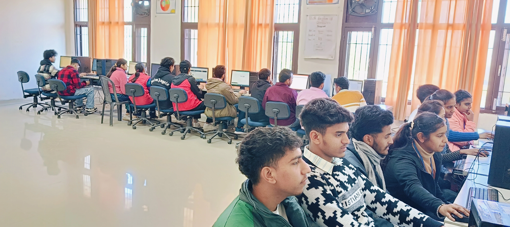
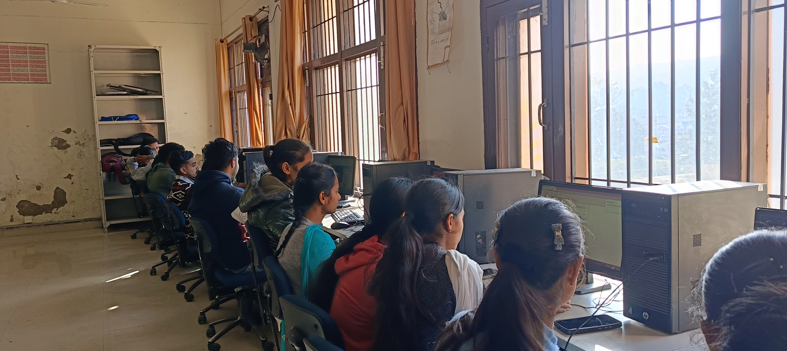
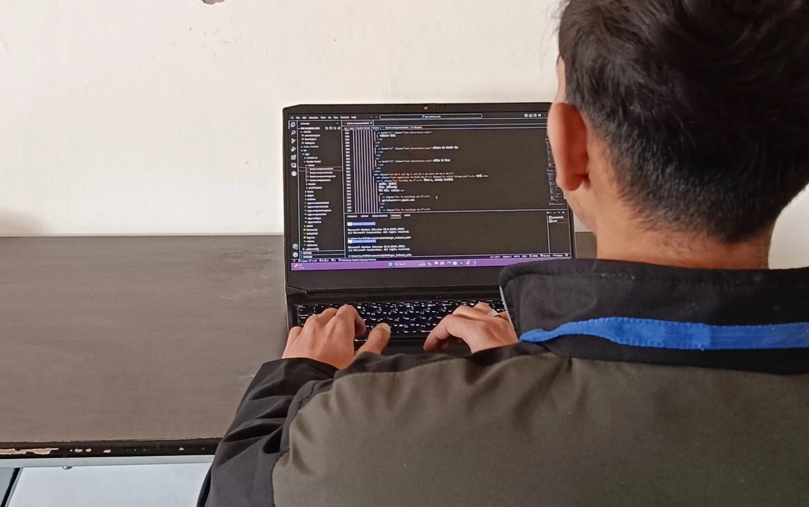

Electrical Engineering
Power Up Your Future: Master electrical engineering to spark innovation, from smart grids to renewable energy and intelligent machines. Design the electrifying world of tomorrow.
Electrical Engineering in a Nutshell
- Fundamental concepts in electrical systems: Electrical Engineering at our college emphasizes a solid foundation in principles such as circuit analysis, electromagnetism, and power systems.
- Practical skills development: The program ensures hands-on application through labs and projects, allowing students to translate theoretical knowledge into real-world solutions.
- Emphasis on sustainable practices: Our electrical engineering curriculum integrates renewable energy systems, preparing students to address global energy challenges with innovative and sustainable solutions.
- Keeping pace with technological advancements:Students engage with cutting-edge technologies, including smart grids, IoT, and automation, ensuring they are equipped for the evolving landscape of electrical engineering.
- Integration with other engineering disciplines:Electrical Engineering students collaborate across disciplines, fostering a holistic approach to problem-solving and preparing them for diverse career paths in technology and innovation.
Our Labs
Project Labs

A project lab in a college computer science department is a
dedicated space where
students work
on hands-on projects, typically as part of a course or program.
These projects can be
individual
or group-based and involve various aspects of computer science
RDBMS and Programming Labs
Both RDBMS and Programming labs offer valuable learning
experiences for students
pursuing careers in computer science, IT, and related fields.
RDBMS labs equip students
with data management skills, while Programming labs hone their
software development
abilities.

Project Labs

A project lab in a college computer science department is a
dedicated space where
students work
on hands-on projects, typically as part of a course or program.
These projects can be
individual
or group-based and involve various aspects of computer science
Project Labs
Within the walls of a college computer science project lab,
theory sheds its textbook veneer and transforms into tangible
solutions. Students collaborate in this dedicated space, fueled
by passion and diverse perspectives, to tackle hands-on projects
- solo or team-based - that delve into various aspects of the
field. They aren't just learning computer science; they're
living it, navigating real-world challenges and pushing the
boundaries of technology.
